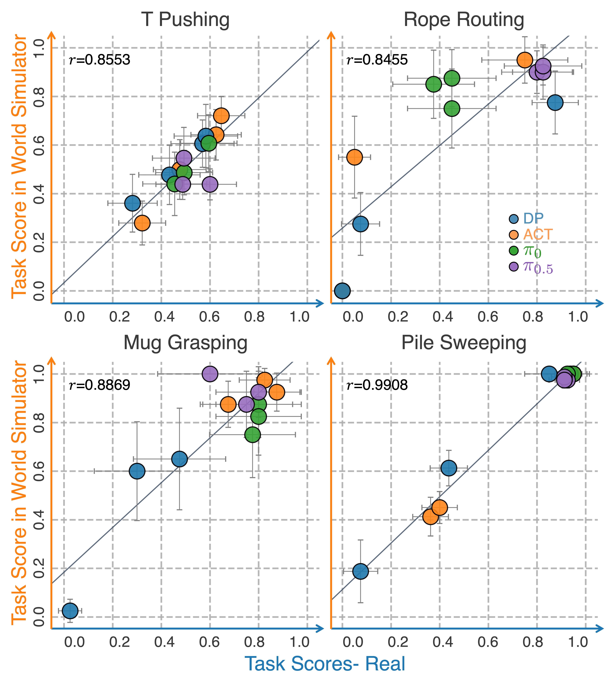

Interactive World Simulator · 2026.10.27
A World Without a Physics Engine Still Needs a Ruler

Give a robot one frame and the actions it wants to take next, and ask it what the frame will turn into. That sounds like something video models already do, until you actually poke them with actions. Most models that can paint take a prompt, not "left hand forward two centimeters, right hand stays put". Poke once, and whether the cloth should move, whether the cup slips through the fingers, whether the rope threads into the clip or swings past it, are differences a prompt tends to flatten into the same "looks about right". Interactive World Simulator bets on exactly those differences: a world model has to take actions, and it must not fall apart while you keep poking.
The work comes from Columbia, Toyota Research Institute, Amazon, and UIUC, by Yixuan Wang, Rhythm Syed, Fangyu Wu, Mengchao Zhang, Aykut Onol, Jose Barreiros, Hooshang Nayyeri, Tony Dear, Huan Zhang, and Yunzhu Li, published at RSS 2026. Four tasks lay the bet out: push a T-shaped block, grab a mug, sweep a pile of things into a dustpan, and thread a rope into a clip. Rigid contact, small slips and rotations, a pile of objects, and a rope that bends. None of them can be bluffed with "I have seen a lot of robot videos".
Why not just use a physics engine
A physics engine can of course compute contact. The price is that every new scene needs someone to hand over geometry, mass, and friction, and ropes and piles of small objects are especially uncooperative. At the other end is open video generation: from the same starting frame and a task description, a closed model can produce a busy-looking recording, but that recording does not accept your action sequence, and once generated it is over. Neither policy training nor policy evaluation wants a promo video. Training needs to collect demonstrations inside the model with a teleoperation device; evaluation needs a policy's success or failure in the model to match its success or failure on the real robot.
So the simulator they want works like this: given an initial frame and a sequence of actions, play forward in pixels without calling a physics engine to referee. The project page is specific. Open-loop interaction can run at 15 frames per second on one RTX 4090 for more than ten minutes. When imitation policies are trained on demonstrations generated by the model, sweeping the ratio of generated to real data from 0% to 100%, DP, ACT, π0, and π0.5 stay at roughly the same level on push-T, sweeping, mug grasping, and rope threading. Score the same batch of policies in the model and then on the real robot, and the ranking lines up: what fails in the model fails on the robot, and what succeeds in the model succeeds on the robot. The bet is not "paints convincingly" but "can this simulator replace one round of real-robot data collection, and one round of real-robot evaluation".
The tiny part of the model, and the big part
The network is called LatentWorldModel and stands on Diffusion Forcing. Frames are not handed straight to a huge video network that autoregresses from the first frame to the last. They are first squeezed into latents by an encoder, the dynamics move forward in latent space following the actions, and a diffusion decoder paints back to pixels.
The encoder is almost embarrassingly small. For monocular input it is a few stride-2 convolutions that halve the resolution twice and shrink to 4 channels. The parameter count printed on the W7900 this time was 704. Next to it, the diffusion decoder CMDecoder has 27.6 million, the latent dynamics 5.8 million, and the whole trainable model 33.4 million, about 134 MB. Compression learns almost nothing about "what the world is"; it just packs RGB into a smaller feature map and leaves the expressive capacity to the denoising U-Net behind it. It is a hard division of labor: the eyes can be cheap, because image quality and physics have to be earned back in decoding and dynamics.
Training is split into three stages, and the order is itself the method. Stage one trains only the encoder and the diffusion decoder; reconstruction must be nearly perfect first, otherwise the dynamics are guessing on an unreliable map. Stage two freezes the encoder and trains causal latent dynamics: past latents plus action predict the next latent. Stage three brings the decoder back for fine-tuning, so it can handle the noisy latents the dynamics produce, not just the clean outputs of the encoder. The config notes that stages two and three can be swapped; stage two takes the longest. A new task mostly changes action_mode and action_dim. PushT actions are 4-dimensional; the default config's action dimension is 10, for a fuller bimanual setup.
The dynamics, CMLatentDynamics, are causal. The time axis cannot see future frames, which is the basic duty of an interactive simulator: an action you have not taken yet should not already appear on screen. Time embedding uses rotary position encoding, attention can be linear attention, and the convolution kernel is 1 in time and 3 in space, so it behaves more like "mix spatially within each frame, then string time together with attention". The diffusion schedule follows Diffusion Forcing: 1000 training steps, sigmoid beta, velocity prediction pred_v, fused SNR weighting, and 50-step DDIM at sampling time. The data type is float32. That sentence looks like an implementation detail; later it becomes the only line that really blocks the forward pass during the port.
Losses are split by stage too. Stage one's training/rec_loss is the weighted mean squared error of the decoder on noisy images, with latents serving only as conditions. Only stage two has training/loss, with error computed on latents and actions as external conditions. Evaluation metrics include FVD, using an I3D network to measure the distance between generated and real video. The upstream notes include advice on data: actions should cover different speeds, contact modes, and positions, with little occlusion; about 6 hours, 600 episodes of 200 steps each, is usually enough to train a world model.
Every frame can have its own noise
The Diffusion Forcing idea fits well here: a video does not have to share a single diffusion time across the whole clip. The scheduling matrix in the config is autoregressive; past frames can be cleaner and the frame being predicted noisier. During interaction that is exactly the shape you want. What has already happened should stay stable, and only the frame that has not happened yet needs to be fished out of the noise. Keeping a little noise on past frames (prev_frame_noise_scale is 0.1) lets the model see "history is not perfect" during training, so it does not collapse at the first touch of its own errors when rolling open-loop for many steps.
Sampling follows the same structure. Dynamics inference defaults to 1 step, the decoder to 3, and full DDIM sampling to 50. If an interactive simulator walked all 1000 diffusion steps at every step, 15 frames per second would be out of the question. So training learns the velocity field with the full noise schedule, and interaction delivers the next frame with very few denoising steps. Causal attention ensures this frame cannot see the outcomes of future actions; actions are fed into the dynamics as external conditions rather than written into a prompt and left to luck.
The four tasks test whether the same condition is taken seriously. In push-T, planar gripper displacement has to become rigid rotation of the block, and pushing air should change nothing. Mug grasping has to tell the mug slipping out of the fingers from the handle being pushed into rotation; both are tiny pixel changes. Sweeping is a pile of objects each responding, and sweeping into the dustpan and sweeping past it are not the same video. Rope threading is harsher: the rope entering the clip and the rope swinging past it, and the model cannot always paint it going in just because "the task is threading". The project page says this plainly: the model does not favor any kind of contact; contact or not is decided by the action and the current frame.
Unpacking one step of stage one shows how this division of labor lands on tensors. A batch of observations is normalized with the dataset's own mean and variance, the time dimension is folded into the batch, and it goes through the 704-parameter encoder to get conditioning latents. The diffusion scheduler draws a pair of noise levels per sample and noises the clean image twice; the decoder, conditioned on the latents, predicts the cleaner of the two. The mean squared error is scaled by the scheduler's weights and averaged over all pixels: that is training/rec_loss. Stage two moves the same thing onto latent sequences: the encoder no longer receives gradients, the action sequence switches to a time-first layout and goes into the causal dynamics, and the error is computed on latents. Stage three goes back to pixels, but adds a little Gaussian noise to the conditioning latents, forcing the decoder to adapt to the kind of unclean z the dynamics will later deliver. Together the three stages are "first learn to see, then learn to move, and finally learn to see a latent that moves".
Fake demonstrations, real rankings
Collecting real demonstrations is expensive, so they asked a sharper question: can trajectories teleoperated inside the model replace real trajectories for training imitation policies? The experiment fixes the total at 100 demonstrations and sweeps the ratio of generated to real data from all real to all fake, with policies DP, ACT, π0, and π0.5, on push-T, sweeping, mug grasping, and rope threading, in simulation and on real robots. Their conclusion is that performance stays roughly flat along this mixing ratio. That is, at least for these tasks and policies, world model data is in the same class as real data, not "watchable but not learnable".
Evaluation asks something else. With the same initial conditions and the same batch of policy checkpoints, one score comes from the world model and one from the real robot. Good policies succeed on both, bad policies fail on both, and the behavior looks alike. That is much harder than "generate a nice-looking failure". Anyone can make a nice-looking failure: the gripper waves, the image moves. A faithful failure requires the model to be wrong on the contact where the policy erred in the same way the real robot is, instead of kindly drawing the rope into the clip. Ten-plus minutes of open-loop interaction at 15 frames per second says the error does not accumulate into a different robot within a few dozen seconds.
The project page also gives the same starting frame to a set of closed video models that do not take actions, with only a task description such as threading the rope through two clips. Those models produce busy footage, but once generation starts, the hand is out of the loop. Interactive World Simulator's keyboard is the action sequence itself: WASD and IJKL drive the two arms across the plane, and grasping tasks add height and open/close. The image changes with this key press; changing with the prompt is a different kind of model. Long-horizon stability is therefore not just a long enough video but the same interaction lasting more than ten minutes without switching to a different world. For policy evaluation this difference is qualitative. You cannot swap in another policy and watch an already generated recording again; you have to let the policy's actions re-enter the model and have the model hand back the next frame.
The bit of kinematics hidden in the data
The model claims the world does not need a physics engine. The dataset, however, does not directly trust the action stored in hdf5. For bimanual pushing like PushT, when the replay buffer is cached, end-effector poses are recomputed from joint angles and used as actions. Forward kinematics only serves the robot itself: six body joints, from waist, shoulder, elbow, forearm roll, wrist pitch to wrist rotate, multiplied out to vx300s/ee_arm_link. The gripper's prismatic joint comes after this link and does not change the end-effector pose. Of the 8-dimensional joint vector, the first 6 are enough.
This is a clean boundary. Whether the rope enters the clip is taught by pixels in the data, not judged by an engine. Where the robot's fingers appear in the next frame is a known mechanism, with no need for the network to learn the URDF again. What the interactive world model drops is the physics of the scene, not the geometry of the body. Once the cache is built, the actions training sees are already planar end-effector displacements. Single-arm grasping also picks gripper open/close out of the joint angles separately, because that dimension really does change the width of the end effector. PushT does not use it; each hand keeps two planar displacements, making a 4-dimensional action. The dynamics' action_dim must match this convention, otherwise the conditioning vector is misaligned and the model hears "push left" as some other joint.
How a W7900 got mistaken for an A100
This port uses one AMD Radeon Pro W7900D, gfx1100, 48 GB, with an image of ROCm 7.14 and PyTorch 2.11. The container mounts a single render node, and the process sees only this card. The model is 134 MB at batch 1; there is no reason to add cards.
device: cuda does not need to change. ROCm's PyTorch exposes HIP devices as torch.cuda, and Lightning happily reports GPU available: True (cuda). What deceives is a different numbering scheme. The upstream attention module uses torch.cuda.get_device_properties to read the major and minor versions: major at least 8 and minor equal to 0 means A100, and only Flash Attention is turned on. The W7900 reports 11.0. 11 is greater than 8 and 0 equals 0, so a Radeon gets warmly welcomed as an A100.
Right after the welcome comes the error. The model's latents are float32, and Flash SDPA in this version of ROCm only does fp16 and bf16; probing says there is no usable kernel. EFFICIENT_ATTENTION and MATH complete on the same float32. So the HIP branch returns before that A100 check, and the backend becomes the math and memory-efficient implementations. This is not turning Flash off to "make do": the heuristic misidentified the card, and the backend it picked could not handle the data type the model actually uses. The printed line is "ROCm GPU detected, using math or mem efficient attention".
Two dependencies nearby will never show up in the paper. The I3D weights for FVD are on Dropbox, and originally they were downloaded as soon as the metric object was constructed. This machine times out on Dropbox, and a stage 1 run of a few dozen steps never calls compute(). The download now happens the first time FVD is actually computed. Also, wandb.mode=disabled still requires a wandb.entity, otherwise the program exits before checking the mode. Any local name will do.
Kinematics was the bigger detour. SAPIEN 2.2 has no Python 3.12 wheel, and the image is 3.12. Pinocchio's wheel installs and then cannot find its own shared libraries. Another pure-PyTorch kinematics package requires numpy 1, while this ROCm torch ships with numpy 2, and downgrading breaks torch first. Training only needs the end-effector pose, so the six revolute joints of the URDF are multiplied out to the end link with the standard library. Inverse kinematics was not implemented, so keyboard teleoperation was not used for verification. The remaining dependency friction is all of the same kind: CUDA wheels cannot be installed, h5py has to switch to a version with a 3.12 wheel, imgaug's isolated build is missing pkg_resources, and torchmetrics needs the venv's own setuptools to find distutils. The DataLoader hard-codes prefetch_factor=1, which PyTorch 2.11 rejects with zero workers, so data loading uses two processes while compute is still one card.
What thirty steps say
Verification is upstream main.py on the PushT mini set: 5 training and 5 validation episodes, camera_1_color only, horizon 1, batch 1, stage 1, at most 30 steps. All 30 steps completed; the progress bar took 23 seconds, about 1.28 steps per second, and Lightning stopped because of max_steps=30. On the first step MIOpen complained it could not read the gfx1100 tuning database, and the runtime also noted that this processor does not support xnack. Neither warning stopped step 30.
Losses were not written for these 30 steps, which ran with logging disabled. A separate 8-step run with an offline logger left training/rec_loss values of 0.0628, 0.0333, 0.1616, 0.1668, 0.0458, 0.0266, 0.1653, 0.0299, mean 0.0865. Random initialization and batch 1 jump around like this. These numbers show the reconstruction loss is finite on this card and backward completes; they do not show the model has learned the T block. Upstream's own stage 1 trains until reconstruction is nearly perfect, on the order of a million steps, which is outside this verification.
One card is the default, not a fallback. Once a 134 MB model is loaded into 48 GB, a whole card's worth of space is left idle, and multi-card data parallelism would not make these 30 steps more credible.
The code and the logs from this run are at https://github.com/charyang-ai/interactive_world_sim .